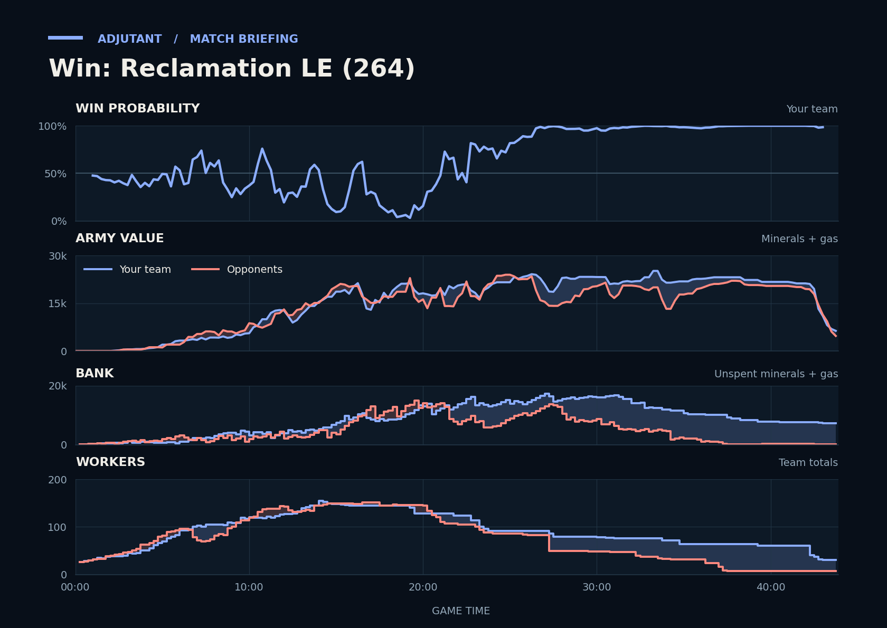

Win: Reclamation LE (264)
Provisional debrief. The full report (timeline, insights and analysis) is being generated.

Cached narration uses different analysis inputs (facts, engine notes, prompts or model settings). It has not been regenerated for this report.
**Win.** Scallop's Vikings won the 26:20 fight at FartGarfunkl's fifth, killing Probes and a Nexus while FartGarfunkl lost more army, and FartGarfunkl's economy never rebuilt.
**Why**
- 26:20–27:28: Armies were about even going in. Scallop's Vikings killed 33 Probes and a Nexus, and FartGarfunkl's workers never recovered.
- 36:52: TakeTheTip's Hydralisks and Lurkers killed SaulPimon's Drones, and SaulPimon's workers were down to one by 37:25.
- 41:54–43:51: TakeTheTip lost all workers in the last fight, but FartGarfunkl and SaulPimon left without typing gg.
Current engine analysis: Win. Review 15:22–15:51: you won a fight (2,500 killed, 1,600 lost). The biggest fight came at 41:54–43:51 (18,750 lost, 16,850 killed).